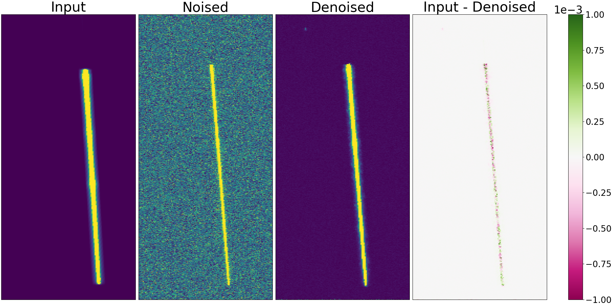
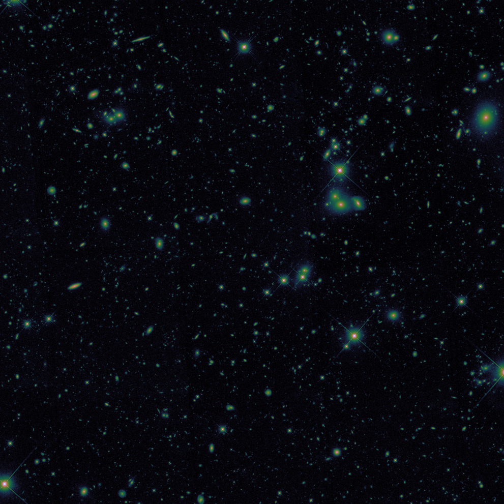
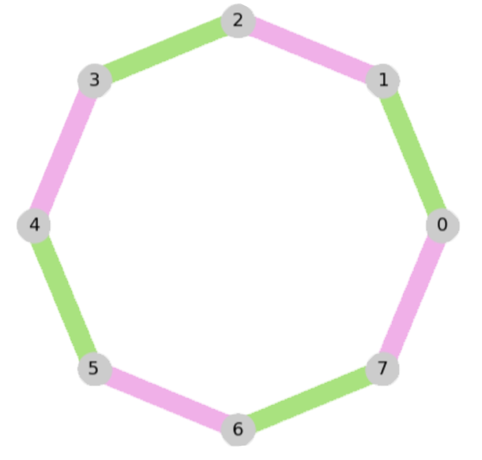
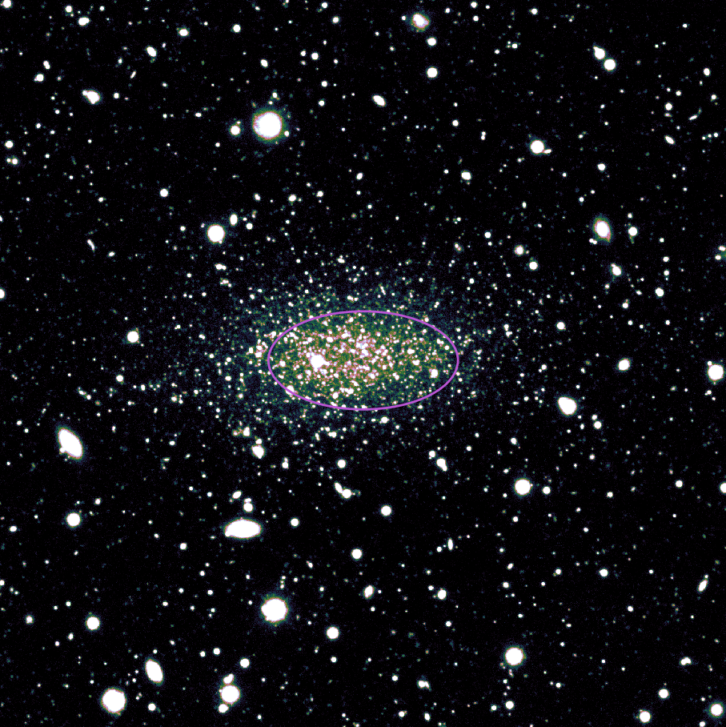

Roman grism denoising [Ongoing]
NASA Goddard Space Flight Center
PIs: Dr. Sangeeta Malhotra & Dr. James Rhoads
Denoising Roman grism images of faint (J > 25.0), high redshift (z > 7) quasars with a probabilistic diffusion model [TODO: insert description]
[Poster]

Figure 1. Grism denoising example on an ESpRESSO-simulated grism image of a z = 8.0 quasar. Input: the simulated noiseless input. Noised: iteratively noise-added image to emulate thermal noise. Denoised: The denoised output from the denoising machine learning model. Residual: The denoised image subtracted from the noiseless input.

← Figure 2. A comparison between simulated Roman f125w and grism images of a crowded extragalactic field at the same position angle. Drag slider to compare.
Open quantum systems

Penn State University Physics REU 2025
PI: Prof. Sarah Shandera
Studying open quantum systems (i.e. our observable universe) with quantum circuit simulation [TODO: insert description]
Measuring the half-light radius of the Tucana Dwarf galaxy
Brown University Department of Physics
PI: Prof. Ian Dell'Antonio
[TODO: insert description]

Neural network emulation for CMB spectra with neutrino parameters
INSERT IMAGE
Kavli Institute for Particle Astrophysics & Cosmology (KIPAC) @ SLAC Natl. Lab, Stanford
PI: Prof. W.L. Kimmy Wu
INSERT DESCRIPTION
this website was handmade by a human (Pei-Jun)